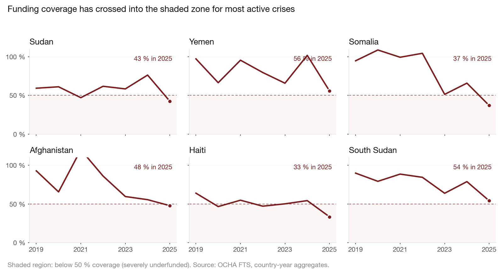
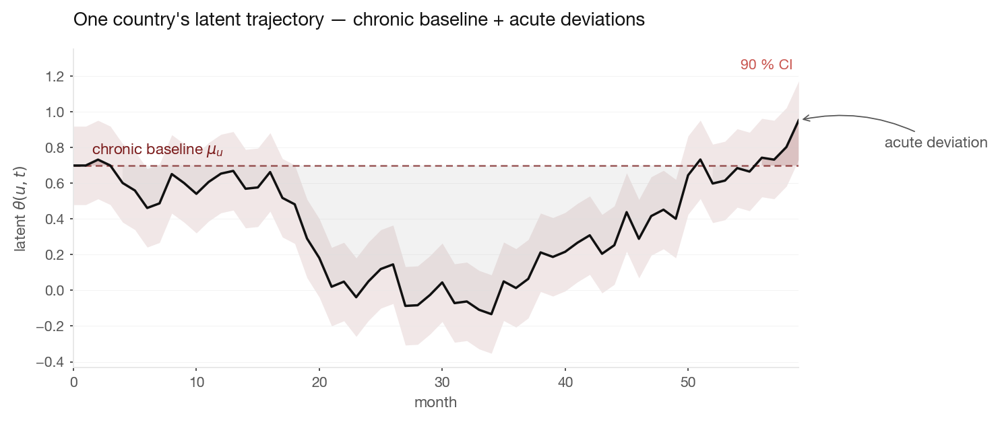
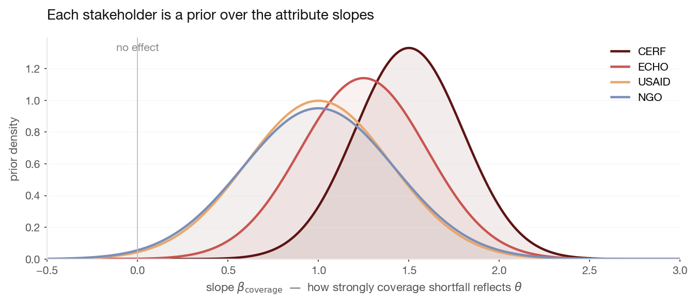
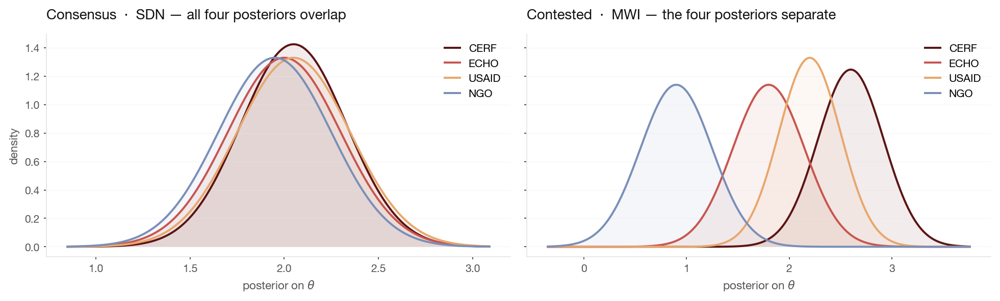
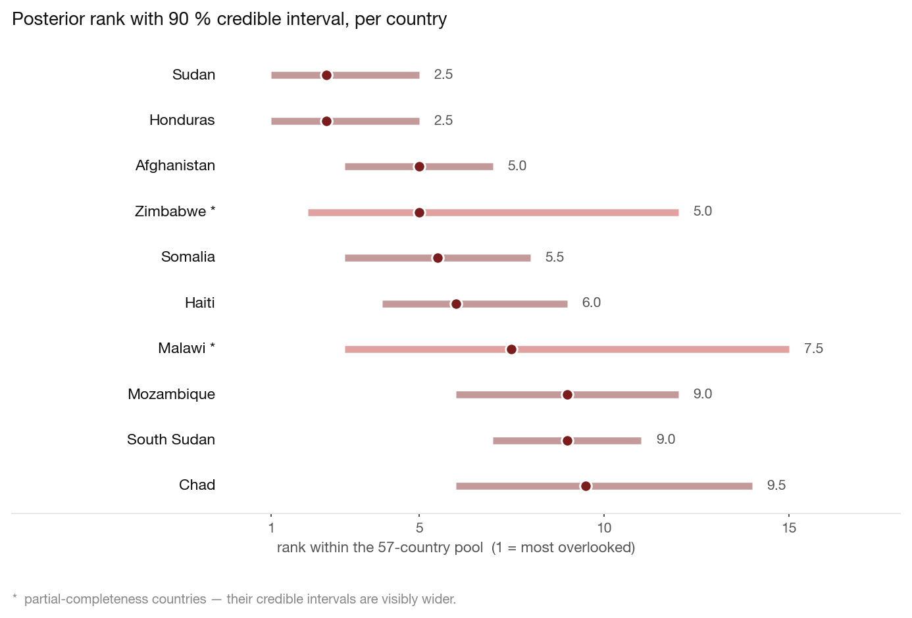

Geo-Insight / Methodology
From observation to overlookedness
A latent-variable model for ranking humanitarian crises under incompleteness, temporal drift, and multi-stakeholder ambiguity.
§ 1The problem
Sorting humanitarian crises by funding coverage used to work. In 2026 it doesn't — not because the idea is wrong, but because almost every active response is now in the failure zone together.
The numbers are stark. The 2026 Global Humanitarian Overview asks $\$33$ billion to reach 135 million people. The 2025 appeal raised $\$12$ billion, the lowest in a decade, and OCHA now flags nineteen country contexts as severely underfunded — up from eight in 2021. Sorting them by coverage ratio places them all in a dense band near the floor. The ranking tells you a crisis is underfunded. It tells you almost nothing about where additional attention would do the most good.

If one number is not enough, what is? Think about how a crisis can be overlooked and the answers separate into at least three categories. A crisis can be forgotten — underfunded, and hardly noticed, like the 2023 Angola drought. It can be contested — underfunded despite global attention, like Sudan in 2025. And it can be sector-starved — adequately funded in aggregate while one sector of the response sits at twenty per cent coverage. These are different problems. They deserve different responses. A scalar coverage ratio conflates them all.
The rest of this document describes a model that does not conflate them.
§ 2A quantity we cannot see
To make progress, we have to name the thing we are trying to measure — and then admit that we cannot observe it directly.
Call it overlookedness, and write it $\theta(u, t)$: one real number per country $u$ per month $t$. This quantity is a fiction in the sense that no one has ever written it down. But it is a useful fiction. It lets us ask a sharper question than "which crisis has the lowest coverage ratio". It lets us ask: given everything we can observe about a crisis, what does the evidence say about $\theta$? And crucially: how confident are we about that answer?
Four small choices about the nature of $\theta$ shape everything that follows. We state them up front because they have consequences.
- $\theta$ is a single scalar. One number per country per month. We considered letting it be a vector — with separate dimensions for "financially neglected" and "structurally neglected", for instance — but that quickly forces us back into a weighted-sum problem to get a ranking. A scalar commits to one notion of overlookedness; different stakeholders can still differ on how attributes project onto it.
- $\theta$ is unbounded. There is no natural "maximum overlookedness". We do not impose one. The numerical scale is book-keeping; everything operationally useful is a rank, or a credible interval on a rank.
- $\theta$ is not identified in absolute terms. The model is unchanged if we shift every $\theta$ by a constant or flip all signs. We pin down the ambiguity with two small conventions: centre $\mathbb{E}_u[\theta(u, t)] = 0$ on the latest snapshot, and require the coverage-shortfall slope to be positive (more shortfall means more overlooked — a direction we are willing to assume a priori).
- $\theta$ is descriptive, not predictive. We infer it from observed data. We do not extrapolate forward. Forecasting comes later, as a separate learned layer (§ 10).
§ 3The clues we do see
Everything we observe about a crisis is a clue about $\theta$. The clues come in four different shapes, and each shape needs its own kind of equation to respect what it is.
We work with six clues — the funding coverage shortfall, the unmet amount per person in need, the fraction of the population that is in need, the INFORM severity category, a measure of donor concentration, and a measure of how evenly funding is split across sectors within the country. Three of them live on the unit interval. One of them lives on the positive reals and spans orders of magnitude. One is a $\{1, 2, 3, 4, 5\}$ ordinal. And in a real panel of countries and months, any of them can be missing.
Four shapes, four families of equations. The figure below shows what each family does: the coloured curves are how the probability of an observation changes as $\theta$ moves.

Beta regression — for bounded fractions
The coverage shortfall is a fraction between zero and one. So is the Gini. So is the HHI. So is need intensity. Their likelihoods should respect that: a model that can predict "negative shortfall" or "120 % need intensity" has already gone wrong. Beta regression handles this directly by parameterising the distribution's mean $\mu$ with a logit link and keeping its support in $[0, 1]$:
$$ a_i(u, t) \mid \theta(u, t) \;\sim\; \mathrm{Beta}\bigl(\mu_i\,\phi_i,\; (1 - \mu_i)\,\phi_i\bigr), \qquad \mu_i \;=\; \sigma\bigl(\alpha_i + \beta_i\,\theta(u, t)\bigr). $$
The slope $\beta_i$ says how strongly this attribute responds to $\theta$; the precision $\phi_i$ says how tightly observations cluster around the predicted mean. Panel (a) of Fig 2 shows the same beta distribution shifting as $\theta$ moves — always still in $[0, 1]$, as the real data is.
Log-normal — for positive-real quantities
The per-person funding gap is a few dollars in some crises and a few thousand in others. Logarithms are the natural way to compare things that span orders of magnitude. We model the log of $a_2$ as Gaussian: $\log a_2 \sim \mathcal{N}(\alpha_2 + \beta_2\,\theta,\; \sigma_2^2)$. A multiplicative change in $\theta$ produces an additive shift on the log scale, which is exactly how financial gaps empirically scale.
Ordered probit — for the severity category
INFORM's severity is 1 through 5, labelled Very Low through Very High. These labels are ordered, but there is no reason to believe they are equally spaced — the step from High to Very High is almost certainly larger than Low to Moderate. Treating the label as a continuous number 1–5 builds that false assumption in. Ordered probit handles it properly. It places four cut-points $\kappa_1 < \kappa_2 < \kappa_3 < \kappa_4$ on a latent continuous scale:
$$ y(u, t) \;=\; \alpha_4 + \beta_4\,\theta(u, t) + \varepsilon, \qquad \varepsilon \sim \mathcal{N}(0, 1), $$
and declares the category observed whenever $y$ falls in the interval $(\kappa_{k-1}, \kappa_k]$. The cut-points are parameters we infer alongside everything else — we let the data tell us how INFORM actually spaces its qualitative labels.
Missing observations — structural, not procedural
Here is the quiet piece that does a surprising amount of work. If the Gini is not observed for a country-month, the likelihood contribution for that $(u, t)$ pair is simply zero. We do not fill it in. We do not guess. The posterior on $\theta(u, t)$ gets whatever sharpness the observed likelihoods can give it, no more. Fewer observations ⇒ wider posterior. Panel (d) of Fig 2 shows exactly this.
This is not a rule we impose. It falls out of the axioms of conditional probability. And it has a consequence: a country with sparse data cannot accidentally produce a confidently-extreme rank, because the evidence for that rank isn't there. The honest answer shows up automatically as a wider credible interval.
§ 4Crises have memory
Sudan's overlookedness in April 2025 is not independent of March 2025. The model needs to know this, and needs to turn it into something useful.
A crisis has a personality — a long-run baseline it tends to sit at — and episodes — deviations from that baseline. The simplest honest way to write this down is as an AR(1) process with country-specific parameters:
$$ \theta(u, t) \;=\; \mu_u \;+\; \rho_u\bigl(\theta(u, t-1) - \mu_u\bigr) \;+\; \eta_u(t), \qquad \eta_u(t) \sim \mathcal{N}(0,\, \tau_u^2). $$
Three quantities fall out of this equation, and all three are operationally meaningful. $\mu_u$ is the country's long-run baseline — the chronic component of overlookedness. The deviation $\theta(u, t) - \mu_u$ is the acute component — how this month compares to the country's typical level. And $\rho_u$ says how long shocks persist: close to 1 means drift accumulates, close to 0 means each month is a fresh draw.

§ 5Stakeholders, as priors
This is the move that makes the whole thing work. Most tools ask what weight each attribute should have. We ask what each stakeholder believes about each attribute, and let that belief be tested.
Different humanitarian actors emphasise different signals. CERF leans on severity and coverage shortfall. ECHO leans on equity within a crisis. USAID looks at donor concentration. An NGO consortium might weight sector-equity most heavily. In the old machinery this was a disagreement about numbers in a weighted sum. We can do better: treat each stakeholder's emphasis as a Bayesian prior over the attribute slopes, and then let the data tell us whether the emphasis was warranted.
Formally, each stakeholder $s$ is a prior on the six slopes of our observation model:
$$ \beta_i^{(s)} \;\sim\; \mathcal{N}\bigl(m_i^{(s)},\; v_i^{(s)}\bigr), \qquad i = 1, \ldots, 6. $$
The mean $m_i^{(s)}$ says what stakeholder $s$ thinks the slope is likely to be, a priori. The variance $v_i^{(s)}$ says how tightly they hold that belief — small variance means "I'm confident", large variance means "I'm guessing". Different stakeholders give different $(m, v)$. Fig 4 shows four such priors for a single slope — the sensitivity of coverage shortfall to overlookedness.

There are three payoffs to this framing, and they are worth separating carefully.
The priors are falsifiable
Every prior is a statistical claim. After we fit the model, the posterior on $\beta$ either corroborates that claim or moves away from it. If CERF's prior centres the coverage slope at 1.5 but the posterior concentrates at 0.8, we have learned something concrete about CERF's stated-versus-effective preference. A weighted-sum method cannot produce a finding of that shape — because it has no prior to move away from.
Disagreement becomes a measurement
Instead of four fixed weight vectors producing four ranks, we have four posteriors producing four distributions over $\theta$. Stakeholder disagreement is no longer a heuristic spread — it is the overlap of those four posteriors, which we can measure.
The method is honestly context-sensitive
When a country has rich data, the likelihood dominates and all four stakeholder posteriors converge — the data is speaking loudly enough that everyone agrees. When a country has sparse data, the priors have more weight, and stakeholders' disagreements show up more sharply. The system adapts to how much evidence it actually has, automatically.
§ 6Consensus versus contested
Having four posteriors turns "how much do stakeholders disagree?" from a heuristic into a measurement. Two pictures carry the whole story.
With one posterior per stakeholder, we can literally measure how much they overlap. A country is a consensus case when all four posteriors concentrate on the same region — everyone agrees, roughly, on how overlooked it is. It is a contested case when they separate — the answer to "how overlooked?" depends sharply on whose preferences you ask. Fig 5 shows one of each.

Two scalar summaries suffice for downstream use:
- Consensus score. The fraction of posterior samples in which the country sits in the top-$K$ under all four stakeholder posteriors simultaneously. High consensus means every stakeholder considers the country highly overlooked.
- Contested score. The spread of posterior medians across stakeholders — or, more rigorously, the Bhattacharyya distance between the two most disagreeing posteriors. High contested means the rank depends on whose preferences you apply.
§ 7What a coordinator actually sees
Ranks are what get used. But behind each rank is a posterior, and we refuse to hide it.
For each country, each month, and each stakeholder, we take $S$ samples from the posterior on $\theta$ and read off four things: the posterior median as the point estimate that drives sorting; the 90 % credible interval on both $\theta$ and the country's rank within the scored pool, as the honest statement of uncertainty; a per-attribute contribution decomposition $\beta_i\,\tilde a_i(u, t)$, so a reader can see which signals moved the posterior; and the cross-stakeholder consensus and contested scores from § 6.
Fig 6 shows what this looks like in practice — a forest plot of the top-ten most overlooked countries in 2025, under the widest evidence-bounded pool. Each red dot is a posterior median rank; each pink bar is a 90 % credible interval. The two partial-completeness countries (marked with an asterisk) have visibly wider intervals. That is the model being honest about what it does and does not know.

§ 8Validation
A model's job is not to feel right. It is to agree with reality, or fail noisily. We validate in three ways, pre-registered before any fit.
- Temporal held-out. Fit the full model on data through December 2024. Predict posterior ranks for 2025. Compare those ranks against OCHA's CERF Underfunded Emergencies selections for 2025. Report top-$K$ overlap and rank correlation, each with a 90 % credible interval drawn directly from the posterior samples — no bootstrap needed.
- Attribute masking. Take a country with all six attributes observed. Mask each attribute in turn, refit, and check that the credible interval on the posterior rank widens — by an amount predictable from the information content of the masked signal. If masking narrows the interval, the model is miscalibrated and we investigate.
- Consistency with the simpler method. Under a deliberately diffuse stakeholder prior, the posterior median ranking should approximately reproduce the weighted-sum ranking we shipped in the first version of the system. If it doesn't, at least one of the two is wrong and we need to find out which before trusting either.
Validation lives in the dashboard as a dedicated view, and is repeated in the formal paper so the numbers are on record.
§ 9What we are not claiming
The system produces ranked posteriors, traceable to source data, with declared uncertainty. That is all it does. It is worth saying what it deliberately does not do.
- No forecasting. The model describes $\theta(u, t)$ at times we have data for. It does not extrapolate forward. Forecasting is a separate job for a separate layer (§ 10).
- No causal claims. The observation model is statistical association, not intervention. The model will not tell you what would happen if a country got more donors — only what the posterior looks like given the observed data.
- No replacement for judgement. The system produces a ranked list with credible intervals and an attribute-level decomposition of what moved each posterior. Humans decide what to do with it.
- Benchmarks are imperfect. CERF UFE selections reflect both genuine overlookedness and political process. CARE's Breaking the Silence reflects media attention, not funding. Agreement with either is evidence. It is not proof.
- Stakeholder priors are judgement. The four prior tables encode what we believe CERF, ECHO, USAID, and NGO consortia broadly emphasise. They are a starting point. Calibrating each prior against actual observed behaviour — regressing CERF UFE membership on the attributes, for instance — is a natural extension we have not done yet.
- $\theta$ is never directly observed. Every posterior statement is contingent on the observation model being approximately correct. The validation tests above are evidence that it is. They are not proof.
§ 10The learned layer
The six signals we use are themselves aggregates — summaries of a much richer raw panel. There is information in the raw data that our six clues cannot capture. The next step is to let a learned representation carry it.
Under each of our six aggregate attributes sits a richer underlying signal: eighteen INFORM sub-indicators on displacement, casualties, access, and phase-level need; the monthly reporting on funding flows, donor by donor; sector-level breakdowns with their own missingness structure. A sequence model trained on the full monthly panel — Mamba, a masked-attention encoder, something of that family — can compress that history into a low-dimensional embedding $z(u, t) \in \mathbb{R}^d$ that carries information the six aggregates throw away.
The extension slots in cleanly. Replace the current observation model $a_i \mid \theta$ with $\{a, z\} \mid \theta$. The latent $\theta$ stays scalar, stays interpretable, stays the same object it is in this document. The learned encoder has a crisp objective — reduce posterior variance on $\theta$ given the available evidence — and an explicit place in the typed ontology: every dimension of $z$ becomes a registered property with its training data, its checkpoint, and its known failure modes declared alongside every other property.
When that layer is in place, the system will produce posterior ranks conditioned on both structured attributes and learned representations — provenance-traceable, uncertainty-quantified, honest about what the evidence does and does not support.